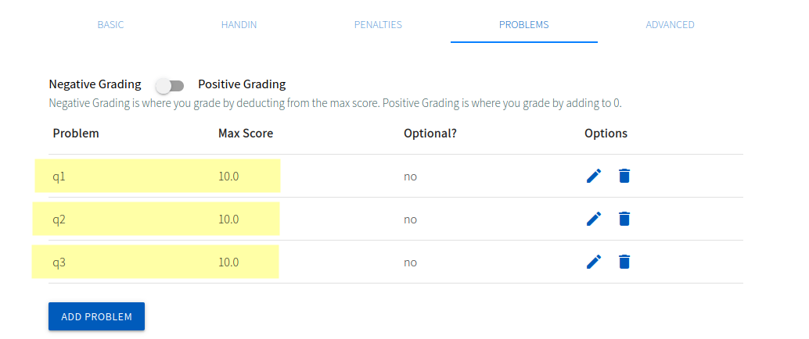
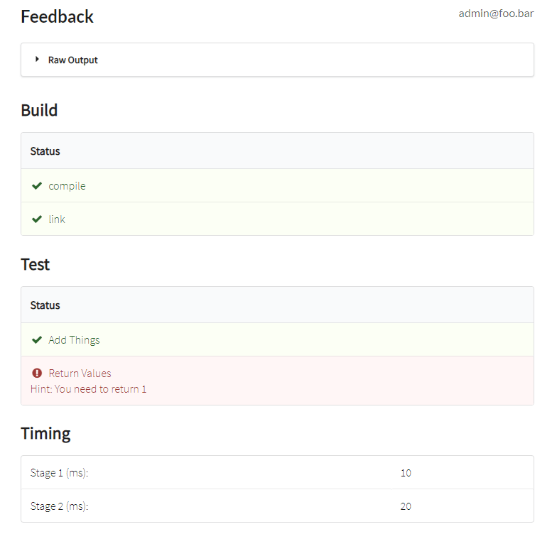
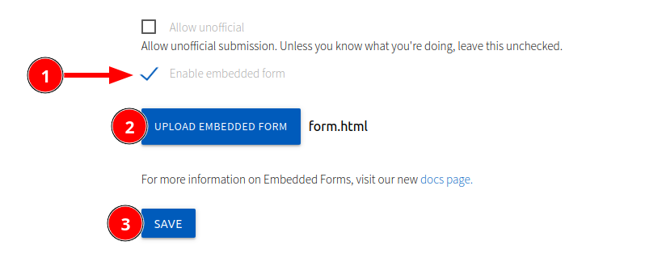

Create an Autograder
This is arguably the most important feature of Autolab. An autograder will run automatically after a student makes a submission to an assessment. As an instructor, you will write code that grades a student's submission. When a student submits their work, it will be copied into a Docker container, along with your grading files and some metadata. Your code should interact with the student's submission in some way to determine its correctness. You can print feedback to stdout for the student to see. The final line you print must be a JSON string with the student's scores for each problem in the assessment.
Setup
Create an assessment
Start by creating an assessment as described in the Create an Assessment guide.
From the assessment page, click Edit assessment.

Set the handin filename
Choose the handin filename from the "Handin" tab. This is the name of the file that your autograder will need to interact with. The extension is an important hint about what type of file students should upload. In this simple grader, I'll have the students upload a Python script.
Have a multi-file project?
Since students can only submit one file, it's common to request they upload a .zip or .tar.gz archive for larger projects. Then, your grader can decompress the archive and have access to all the files.
Add some problems
From the Problems tab, add some problems that will be graded by our autograder.

Save your changes
Remember, Autolab doesn't apply most settings immediately. You'll need to click
Saveat the bottom of the page after making these changes.
Add an autograder
From the Basic tab, scroll down to the "Modules Used" section, and click the plus next to "Autograder".

- Choose a VM image to use. This is the Docker image that your container will be built from. The
autograding_imageis a good choice for Python projects.- You can see all the Dockerfiles for Autolab's VM images in our Autograding Images repository. If you need a custom image, see Create an autograding image. Try to use an existing image if possible.
- Choose the timeout for the autograder. This is the maximum amount of time your autograder will be allowed to run. If
grading takes longer than this, the student will receive partial feedback and an error saying that Autolab couldn't
parse the output from your grader.
- Our new hardware as of fall 2023 is much faster, and many jobs finish in under 10 seconds. I recommend uploading your own solution to the assessment and running it to get an idea of how long it takes to run. Then, at your discretion, add some time to account for performance variation and inefficient submissions.
- If you want to grade based on runtime, this is not the way to do it. You'll need to implement the timeout feature within your grader. Since there's variation between runs, consider even timing your solution within the same container and adjust the expected runtime dynamically.
- Click
Save Settings. We'll come back to this page later to upload the grader.

A Minimal Autograder
An Autograder is composed of two files: a Makefile, and a .tar (not gzipped) archive containing your arbitrary grading code.
Let's walk through the process of creating a super simple autograder. In the real world, you'll need to make your graders more robust.
For this assignment, students will upload a Python script with a function named get_positive_number that should return
any positive number of their choosing.
This autograder's files are available in the sample_files/autograder0 directory if you want to experiment with it.
grader.py
You're free to design your grading code however you want. There are no hard requirements for structuring your grader as long as it can be initiated from a Makefile. For example, there's nothing special about the name "grader.py". There are, however, specific ways to format the final output, which your grader must output to stdout.
The final line your grader outputs to stdout must be a JSON string formatted like this, where q1, q2, and q3 are the problem names in the assessment:
{"scores": {"q1": 10, "q2": 10, "q3": 10}}
There are more advanced feedback features too, but this is the bare minimum.
You can review my sample grader.py in the sample_files/autograder0 directory.
autograde.tar
Once you've written your grader of arbitrary complexity, you'll need to package it into a .tar (not gzipped) archive. I provided a bash script located at sample_files/autograder0/create_grader.sh that will create the archive in this case. It just runs one simple command to bundle all the grading files into an archive. (In this case, there's only one file.):
This file MUST be named autograde.tar. Autolab will rename it when you upload it, so your Makefile and anything else
that depends on this must expect the name to be autograde.tar.
tar -cf autograde.tar grader.py
Makefile
The Makefile is the entry point for an Autograder. After copying the student's submission and your .tar grader file into
a directory, Autolab will run make in that directory. This should invoke the grading process.
Here's a minimal Makefile that will extract our grader and run grader.py.
all:
tar -xf autograde.tar
python3 grader.py
Upload the Autograder to Autolab
Now that we have our autograde.tar and Makefile, we can upload them to Autolab.
Since we added the Autograder module to the assessment, we can click Autograder settings from the assessment page.
Upload the autograde.tar and Makefile, then click Save Settings.
Tip: You can drag the files onto the button instead of needing to open a file browser twice.

Our assessment is now ready to grade submissions!
Test the Autograder
Upload a correct solution
Let's upload a correct solution to verify that our autograder works. There's a sample solution available
at sample_files/autograder0/handin.py.
From the assessment page, choose the file to submit, agree to the academic integrity policy, and click Submit.
You'll be redirected to your handin history.
Refresh the page in about 3 seconds, and you'll see your scores.

Click one of the scores to view your feedback. For autograded assignments, each problem has the same feedback.

Upload an incorrect solution
Now, let's upload an incorrect solution to verify that our autograder doesn't award points.
There's a sample incorrect solution available at sample_files/autograder0/handin_incorrect1.py. Follow the same steps
as before to upload this.

Good! Our autograder is working as expected.
Upload a problematic solution
Crashing the grader
Now, let's upload a solution that will cause our autograder to fail. This will serve to emphasize the importance of
writing robust graders. I wrote a sample solution that doesn't contain the method our grader expects to call. It's
available at sample_files/autograder0/handin_incorrect2.py.
Here's the output we'll get from that:

Autolab tried to parse the last line as a scores JSON string, but it failed because our grader crashed before it printed the scores. In this case, each problem will be assigned a zero.
This may not sound bad at first, but the student can see the full traceback, which may leak information about your grader and make it easy for them to hardcode solutions. It's very important to make your graders robust so they won't crash or leak sensitive information. I'll demonstrate some other naive leaking techniques below. There are more advanced attacks that won't be discussed publicly here.
Getting the grader's source code
For example, with this non-robust grader, the sample_files/autograder0/handin_cheating1.py solution will print
grader.py's source code for the student to inspect.

Setting an arbitrary score
If a student is able to print the final line of the grader's output, they can set their own score. This is possible if you're showing the student's output, and they're able to freeze the autograder until it times out.
For example, with this non-robust grader, the sample_files/autograder0/handin_cheating2.py solution will
print {"scores": {"q1": 10, "q2": 9999, "q3": 9999}} and then sleep for a long time. The grader will time out and
nothing else will be printed, which means Autolab sees that line as the student's scores. You need to ensure your grader
outputs the final line, which usually means implementing your own timeouts.
Formatted Feedback
The new version of Autolab (fall 2023) supports formatted feedback. This is a much more user-friendly way to show autograding results.
To enable the most basic form of formatted feedback, you'll need to print another JSON map to stdout just before the scores:
{"_presentation": "semantic"}
That simple change will format the feedback like this:
That in itself isn't very useful. It's exactly what was shown on the sidebar before. Thankfully, it's possible to do much more.

Screenshot from the Autolab Project docs
Read more about formatted feedback here.
Student Metadata
Along with the student's submission, you'll receive a JSON file named settings.json that contains metadata about the
student. The format of this file looks like:
{"ubit":"username","ip":"1.1.1.1","lecture":"","section":"","timestamp":"2023-07-11T13:32:00.000-04:00","version":8,"github_repo":"username-repo","github_branch":"main","github_commit":"1234abc"}}
This can be used to verify a student is submitting at the right time or from the right location.
Note that the "lecture" value may be null, while the "section" value will always be a string. The Autolab developers
defined the schema as follows:
t.string "lecture"
t.string "section", default: ""
GitHub submission metadata was added in September 2024. When a submission is NOT made from GitHub, "github_repo", "github_branch", and "github_commit" will be null.
A sample grader that simply prints this information is available in sample_files/autograder2.
Embedded Forms
Instead of having students submit a file, you can have them fill out an HTML form and pass the data to your grader.
A sample embedded form grader is available in sample_files/autograder3.
Create the HTML form
First, let's create an HTML form. I've created a sample form in sample_files/autograder3/form.html. Notice that it
only contains the inner HTML of the form tag. Autolab will automatically insert this file's contents into a form
element.
The name attribute on each input is the key that will be used in the JSON file.
The following names are reserved (for settings.json metadata and Rails internals) and cannot be used:
- ubit
- ip
- lecture
- section
- timestamp
- version
- controller
- action
- submission
- utf8
- authenticity_token
- submission_file (only allowed for an embedded form with a file submission)
- integrity_checkbox
- course_name
- name
- github_repo
- github_branch
- github_commit
Note that the label MUST come after the input, or it will be rendered incorrectly. This is worthy of mention because it's different from the Mozilla docs.
This is correct:
<label>
<input name="q2" type="radio" value="Yes"/>
<span>Yes</span>
</label>
This is invalid:
<label>
<span>Yes</span>
<input name="q2" type="radio" value="Yes"/>
</label>
Upload the HTML form
After creating the form, navigate to the Advanced tab of the assessment options.
- Enable the embedded form
- Upload the embedded form
- Click
Save

From the Handin tab, change the Handin filename to handin.json. This isn't strictly necessary, but it's good
practice.
Considerations for the autograder
Your grader will receive a file with the following contents:
{"q1":"apple","q2":"Yes","q3":"99"}
(Updated July 31, 2023: Extra fields professors don't care about have been removed. The output is now a very clean JSON map.)
Your grader will need to parse that JSON and grade the submission accordingly. Notice it may contain non-ASCII characters. See the note below about encodings.
After writing and uploading a grader, visit the assessment page, and you'll see a preview of the form. Fill it out and submit it. It'll be treated like a regular autograded assignment from here, as if the student uploaded the JSON file.

The feedback for our sample grader looks like this. Note that these are different inputs than the screenshot above.
- Be aware that students can submit any data they want. The form isn't validated by Autolab. For example, a multiple choice question can be answered with any string. This may be used intentionally to teach about POST requests in a course like CSE 312: Web Applications, so I won't demonstrate it here.
- Be careful with different encodings. It's safest to remove non-ASCII characters from the student's input. Definitely test submitting with emojis to see how it behaves. 😎
- Also test submitting a blank form.
There's more information about embedded forms here: https://docs.autolabproject.com/features/embedded-forms/
Embedded form with file submission (UB Feature)
If you need students to submit a file with an embedded form, create an embedded form with a file input named "submission_file".
<input type="file" name="submission_file" required>
This file will become the student's handin, and their form data will become part of their settings.json metadata.
If a file is not attached, it will be treated as a regular embedded form submission; the form data will be the handin
file, which will probably cause your autograder to fail. The required HTML attribute can prevent this from occurring
accidentally. This is only client-side validation, so it's not a substitute for proper validation in your autograder.
To preserve backwards compatibility, the form data is merged into the root of the settings.json map. A sample settings.json when creating a form with a file looks like this:
{"q1":"This is my answer to question 1","ubit":"username","ip":"1.1.1.1","lecture":null,"section":"","timestamp":"2023-07-31T15:43:27.000-04:00","version":331,"github_repo":null,"github_branch":null,"github_commit":null}}
You can see a full example of this in sample_files/autograder4.
Note: There isn't a convenient way to access the form data after submitting. If you want students, TAs, or yourself to be able to review the form data later, it's recommended to print it in the autograder feedback.